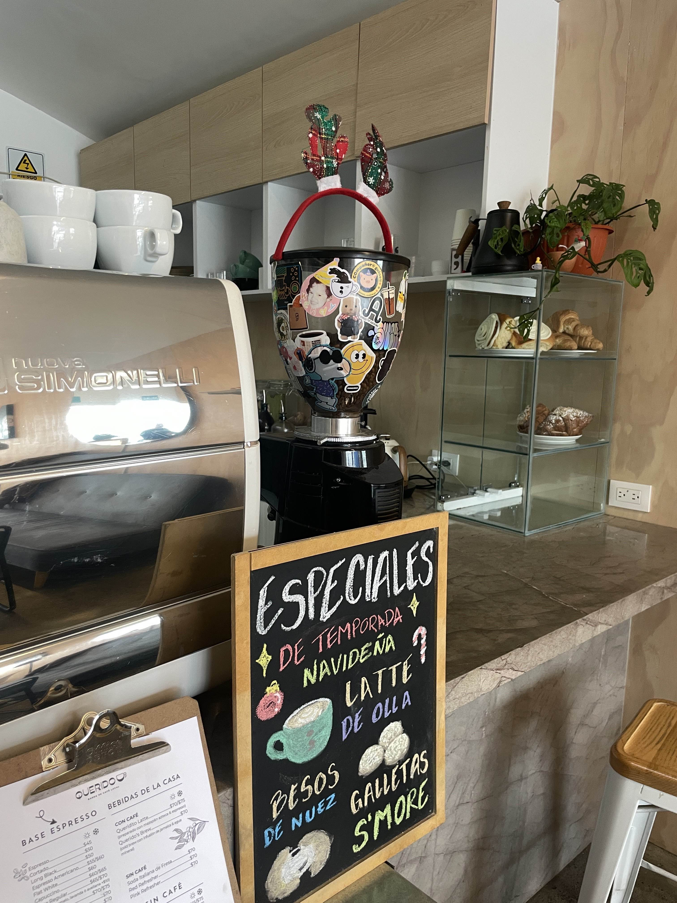
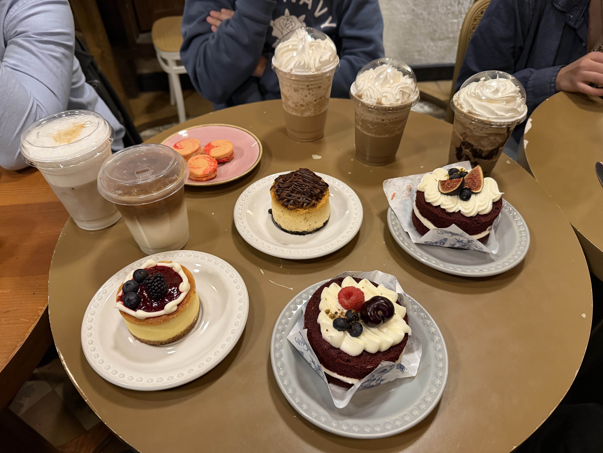
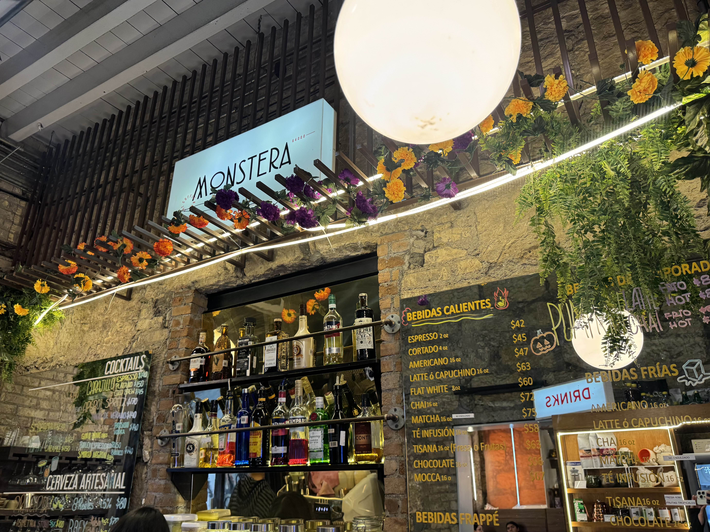
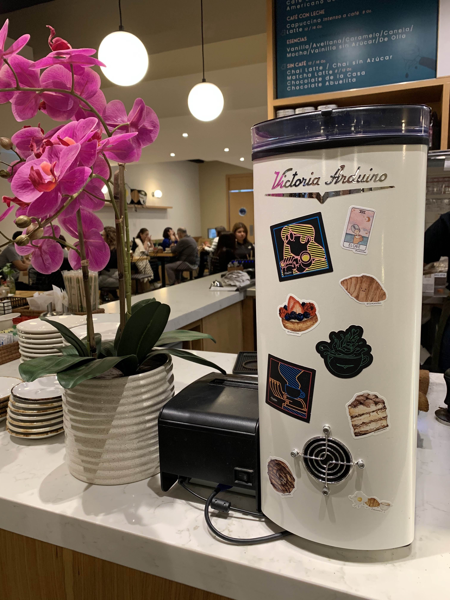

Cafeterias
Definicion
- ¿Qué es una cafeteria?
- Una cafetería es un establecimiento de hostelería donde el consumo principal son el café y las infusiones, aunque también se sirven bebidas refrescantes y alimentos ligeros de preparación rápida
Me encanta visitar cafeterias y probar lattes!!





Algunas cafeterias que me gustan son:
- Galindo's Cafe
- Astromelia coffe
- Eon time coffee
- Casa motis
- Drift
- Lucido
- Intruso kitchen
- Cafe Belmonte
- Querido Cafe
- y más!!